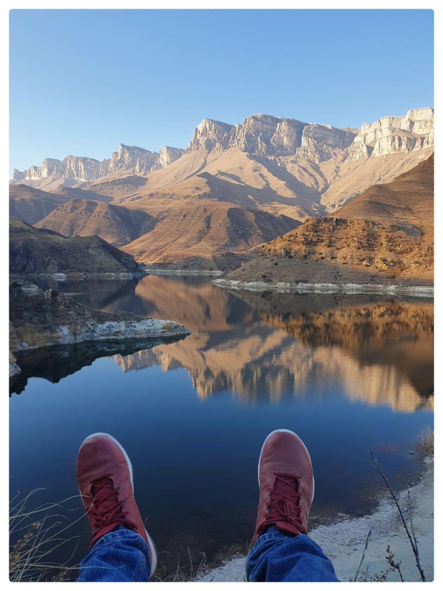

ПОЕЗДКА В КАБАРДИНО-БАЛКАРИЮ
В ноябре 2019 года мы с сестрой впервые поехали в Кабардино-Балкарскую ресбублику. Самое большое впечатления нам оставили Гижгитские озёра. Это потрясающе красивое место - рукотворное езеро на фоне скалистого песчаника. В самом озере купаться крайне опасно для здоровья так как это озеро - отстойник, куда в советское время сливали воду с производственных предприятий.
